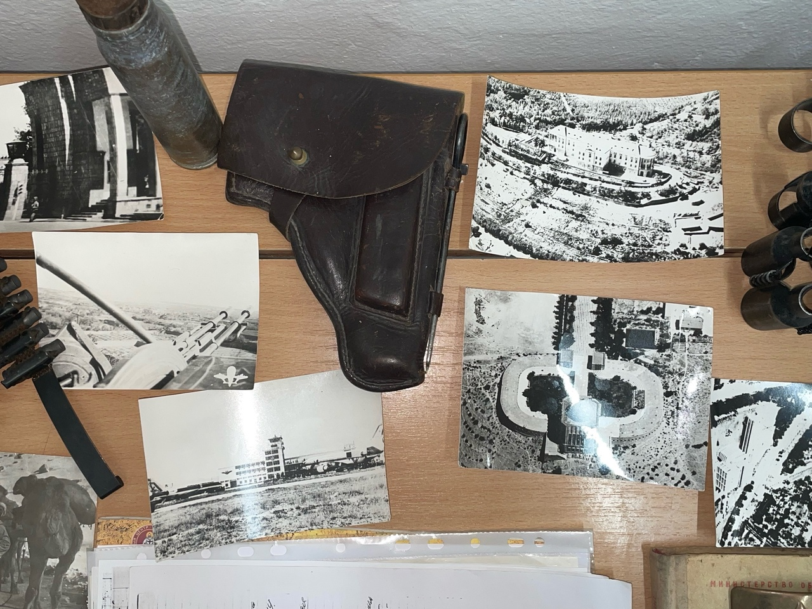
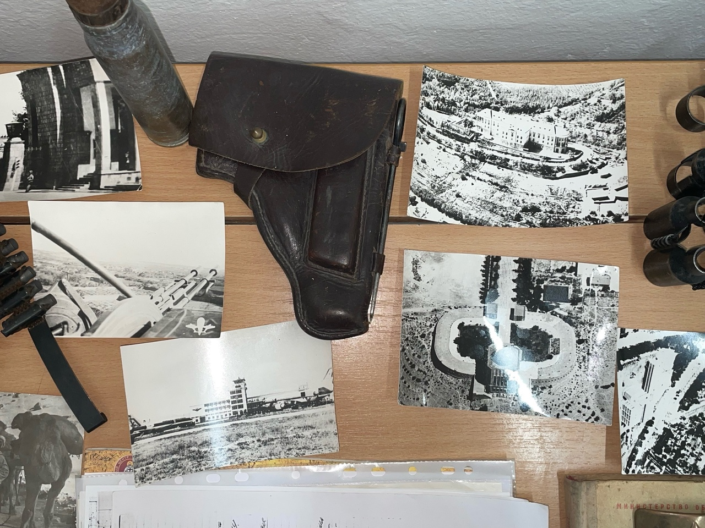
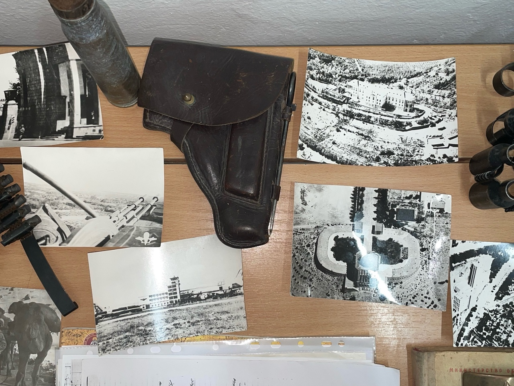

Галерея
 

Контакты
Школа №37
г. Ульяновск
По всем вопросам можно обращаться через администрацию школы
Герой, выпускник школы №37 города Ульяновска
Игорь Геннадьевич родился 10 ноября 1965 года в городе Ульяновске. В 1973 году пошел в первый класс школы № 37. Игорь увлекался спортом, занимался легкой атлетикой, лыжами. Очень любил стихи, писал сам и даже пытался посылать их в журнал «Пионер».
В 1980 году вступил в ряды ВЛКСМ, был комсоргом класса. С 1981 по 1983 годы по рекомендации райкома ВЛКСМ Засвияжского района Игорь занимался в школе юных танкистов при Ульяновском танковом училище. Он готовился к службе в военно-десантных войсках и закончил училище досрочно.
22 апреля 1985 года был призван в ряды Советской Армии. Шестая рота, где он служил, являлась десантно-штурмовым батальоном. 5 августа 1985 года рота была отправлена в Кабул, где шла война. Игорь попал в город Гордез, где с рацией за спиной выполнял свой воинский долг.
10 марта 1987 года при выполнении задания командирская машина, в которой находился Игорь, подорвалась на двойном фугасе. На 22-м году жизни Игорь погиб, выполняя свой долг перед Родиной.
В нашей школе есть две даты — 10 ноября и 10 марта, когда мы с особой теплотой вспоминаем нашего героя Игоря Геннадьевича. Мы, юное поколение учеников школы №37, гордимся своим героем и сохраняем память о нём.

Школа №37
г. Ульяновск
По всем вопросам можно обращаться через администрацию школы